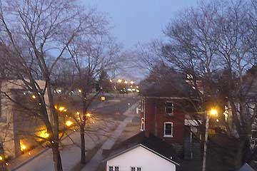

Firmaet Afuture som har bygget vores elbil er gået konkurs. Det får ikke nogen betydning for vores verdensomrejse, da vi selv ejer bilen og betaler rejsen. Vi fortsætter derfor ufortrødent, og håber på at bilen aldrig går i stykker, nu da der ikke længere er et værksted. Søren Ekelund har dog lovet fortsat at supporte os med gode råd... han fortsætter på elbilfronten på anden vis.
Nina og Hjalte

Solen stod op over Missisippifloden og kastede lyserødt lys ind i det store værelse på husets øverste etage. Derfra havde vi udsigt til den nye bro over floden. Kulpramme mosede op ad floden. Efter en gåtur fulgt af en god stor kop morgenkaffe og en lang elbil-snak i køkkenet kørte vi til Jacks garage. Først fik Grønne dog en vask, så den igen kom til at stråle. Så startede TVoptagelsen hvor Grønne, Hjalte og jeg blev præsenteret. I kan se os på <www.evtv.me>. Det var svært at løsrive sig, men vi måtte videre mod Detroit Autoshow. Vi har travlt og kører derfor hver dag og holder tre timers ekstra ladepause ved frokosttid. For at spare på strømmen har vi endnu ikke tændt for varmen i bilen. Vi var iskolde da vi kom frem til Mark og Theresa, som boede i et smukt hus i St. Louis med en Tesla i garagen - og et godt strømstik til Grønne, som de venlige mennesker havde intalleret forbi vi kom! De er to læger omkring 40 og har også et par store Audier og en flyvemaskine.
Nina


Det var blevet mørkt inden vi nåede frem til Cape Girardeau, en lille by ved Missisippi. Vejen blev lille og mørk og vi troede næsten at vi var kørt forkert, da vi pludselig kom til en stor garagebygning hvor Jack Rikard tog imod os. Lys og varme og masser af plads. I hans TV-studie, som også var et værksted, stod de flotteste veteran Porche sportsvogne som Jack havde konverteret til el. Hver uge laver Jack et TV program på nettet om biler og hvordan man bygger dem om til elbiler. Han var dybt inde i batteriteknologi og elbiler og var en spændende person at tale med. Vi kom med hjem til familien, som boede i et stort og eventyrligt hus i tre etager bygget for 130 år siden af en gammel flodkaptajn helt ude ved bredden af den store flod. Jacks kone og deres datter og barnebarn, og Jacks mor var der, og vi satte os omkring et stort rundt bord og spiste en dejlig middag som Jacks kone havde lavet! USA kan ikke leve uden olie, sagde Jack, billig olie og billig transport er med i alle facetter af vores liv. Sæt prisen op til europæisk niveau og USA bryder sammen. Han forudså voldsomme omvæltning i en nær fremtid.
Nina


Temperaturen faldt fra 23 grader i går til 2 grader her til morgen. Der var ikke de mindste rester af fyrværkeri at se noget steds, og vi havde næsten heller ikke hørt eller set noget om natten. Lidt søvnig kører jeg bilen til Newport. Endnu er vi ikke begyndt at tænde varmeapparatet i bilen. Så da vi købte ind i Wallmart fandt jeg et par store joggingbukser at tage udenpå de to par bukser jeg allerede har på. Alle de små restauranter var lukkede, så for første gang spiste vi på en kæderestaurant. Vi valgte Buffet og det var billigt, billigere end selv at lave mad. De fleste amerikanere har slet ikke mad i deres køkken, kun snacks og soft drinks og isterninger. Familiemedlemmerne er sjældent hjemme samtidig, så i mange hjem er spisebordet på vej ud. At lave mad selv er kun for de velhavende.
Nina


Da jeg kørte ud fra motellet virkede bremsen i bilen næsten ikke. Vi havde været ude for det tidligere, og havde et lille relæ med, som Hjalte hurtigt fik udskiftet, så Grønne kunne bremse igen. Om eftermiddagen søgte vi forgæves efter 220 volt strøm i Texarkana. Vi hilste på et par unge fyre som morede sig med at have en bil højt oppe på nogle overdimensionerede hjul og bukserne langt nede. På KOA campingpladsen udenfor byen fandt vi en meget venlig bestyrer og et godt strømstik. Elektricitet er billig. Efter tre en halv time havde Grønne suget for 1$ og 40cent. Sammen med en hær af store lastbiler kørte vi ud ad den mørke landevej og ind i Arkansas.
Nina


Vi ville shoppe før Idas afrejse fra Dallas til Virgin Islands i morgen. I Fort Worth besøgte vi et historisk kvarter med en masse turistbutikker med cowboytøj. Der var mange fine ting, og meget skrammel. Men vi købte ingenting, det var for dyrt. Der var støvler til 10.000 dollars. Vi spiste frokost i en cowboy grill og brugte så eftermiddagen på at se to store kunstmuseer. Det vrimlede med mennesker der havde brug for at få en dag i juleferien til at gå med noget kulturelt. Der foregik ikke så meget andet, meget var lukket i Fort Worth, så det var museernes travleste dag. Elliot var med til det hele i sin klapvogn, og som altid i godt humør.
Nina

I strålende sol gik vi en halvanden times tur langs landevejen for at give Grønne lidt ekstra ladetid. Flere biler standsede og spurgte venligt om vi var OK? Det er ikke almindeligt at nogen går på deres ben. Der er hjul under fra vugge til grav. Vi nåede til sidst frem til en kirkegård hvor gravene var smukt dekorerede med plasticblomster. På tilbagevejen blev vi opmærksomme på hvad der lå i vejkanten, hvor ingen mennesker havde gået i mange år. Vi fandt blandt andet en gammel rusten hestesko, en savklinge, overkørte bæltedyr og skildpadder, rester af billygter, bildæk og spejle, to skruenøgler, en veterinær injektionssprøjte, mascara, tomatketchup fra MacDonalds, skruer og bolte, mange cigaretskod og knuste spiritusflasker, låget af en dåse snus, et prisskilt fra en skjorte, en kuglepen og en nummerplade. Dagen sluttede på et motel i Fort Worth.
Nina


Efter at vi havde pakket Grønne og afleveret den lejede RV var vi parate til at køre ud af San Francisco med 77% strøm på batterierne. Først måtte vi lige tage nogle billeder af Grønne i de stejle gader. Grønne klarede fint stejlheden men det var umuligt at fotografere det. Vi forsøgte også at finde et amerikansk strømstik i en hardwarebutik, og det tog alt sammen tid og strøm. VI måtte lade med generator i en halv time undervejs for at nå frem en campingplads ved kysten. Teltene blev sat op hvorefter vi konstaterede at der ikke var strøm på pladsen. Vi forsøgte at trække en ledning til en stikkontakt på et toilet, men der var ingen strøm i. Der var ikke andet at gøre end at sætte vores medbragte generator til. Hjalte var oppe og fylde benzin på to gange i nattens løb for at få Grønnes batterier op på sølle 68 %. Imens sov jeg tungt i min nye sovepose.
Nina


Om eftermiddagen mødtes vi med nogle medlemmer af den amerikanske elbilforening. Flinke folk som havde en del erfaringer og historier at fortælle. Nogle havde kørt elbil eller elmotorcykel i 20-30 år. De mener ikke at det store gennembrud for elbiler er ikke lige om hjørnet i Amerika. Men der er mange elbil-entusiaster i Californien, og rundt omkring i USA. De sagde at hvis man vil lave en lille formue på elbiler, skal man begynde med en stor formue! Det regnede alle 50 kilometer på vejen tilbage. En uendelig strøm af røde og hvide billygter glitrede da jeg kørte bilen hjem gennem mørke og regn. I morgen afleverer vi den store RV og rejse videre i Grønne. Der er en lang vej forude inden vi er i New York.
Nina


Den første opladning var med et husholdningsstik med to flade ben. Efter en hel nats opladning havde batterierne ladet fra 13% til 78% -Ikke særlig imponerende, så vi må finde ud af at få et stik som kan klare en større strømstyrke. Efter en prøvepakning satte vi os for første gang i Grønne alle fire. Hjalte styrede og jeg sad bag i bilen sammen med Elliot, som havde fået sin egen autostol at sidde i. Imens vi kørte fandt Ida vej ved hjælp af sin computer og satellit-antennen fra Thrane og Thrane på taget af grønne. De dage vi har ventet på Grønne har vi i høj grad savnet den mobile internet- og telefonforbindelse via Inmarsat. Vejret er mildt så vi vil fremover sove i telte så længe vi kan. Derfor kørte vi til et stort sportsmagasin hvor jeg købte en varm sovepose og Ida købte et liggeunderlag. Resten af campingudstyret har vi i bilen.